4 Results
The results follow the no-self-evidence chain: the QRF boundary geometry and indistinguishability audit show, within the finite ledger, that the same bitstream supports several admissible sector frames; a finite quantum scope summary places the implemented extension engines; the Bayesian model reduction pruning and sensitivity behavior trace the separation prior from useful to dispensable; and the pymdp policy traces implement the profiles as finite generative-model runs. The claim-context, criticality, compassion, scholarship, and visualization governance surfaces that keep every finite output below its evidence ceiling are reported in the supplement rather than in the main result sequence.
4.1 Boundary Geometry and QRF Indistinguishability
The boundary result is now separated into a reader-facing screen definition and two linked result figures so that the same object is not compressed into one panel. The geometric object is introduced in the screen diagram (fig. 2). The b0-b5 channels are software observation channels on a finite boundary screen, action enters the screen, and observation leaves it. The result here is what that screen permits after it has been defined: the relabeling ledger and policy-flow audit show how QRF sector labels organize the same bits without turning nodes, labels, or edges into biological sensors, physical quantum-reference-frame systems, or discovered ontological sectors (Giacomini et al. 2019; Vanrietvelde et al. 2020).
The second step is the paper’s no-self-evidence point in ledger form.
fig. 4 keeps the
evidenced row fixed as b_i same bit, then displays how the
separation-constrained, opacified, and post-dual profiles relabel those
same channels into self, env, action, body, world, other, and care
sectors. The matrix is intentionally text-labeled as well as colored:
the same bitstream can support different QRF partitions, so the
partition organizes the model without becoming evidence for the
partition’s ontology.
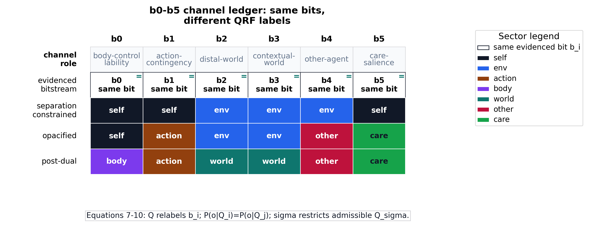
The third step checks that the relabeling discipline is operational rather than merely diagrammatic. fig. 5 shows that all admissible deployments preserve normalized boundary probability mass while the perturbation control fails, then shows that profile-specific policy selection still acts through the same audited screen. The right panel therefore reports model organization and action selection under different QRF profiles; it does not upgrade the sector labels into empirical entities.
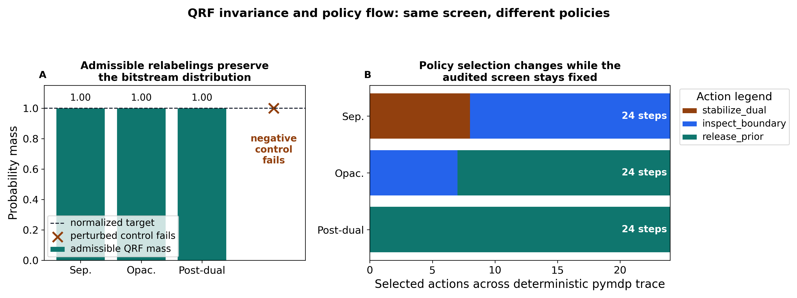
The same indistinguishability shown here is what licenses frame use without an ontological verdict (fig. 3), and that license is precisely what lets the separation prior be judged on agency rather than on truth in sec. 3.3.
4.2 Finite Quantum Scope and Blocked Claims
The finite quantum layer defined in sec. 3.1 appears in the main Results only as a scope summary. The source paper’s central software target remains the no-self-evidence chain: b0-b5 carry observations, QRF deployments relabel the same channels, sigma restricts admissible deployments, and BMR compares the cost of keeping that restriction. fig. 6 shows which quantum and contextuality engines support that chain and which stronger readings stay blocked as physical qFEP realization, empirical observer-boundary measurement, neural evidence, clinical evidence, or practice-efficacy evidence.
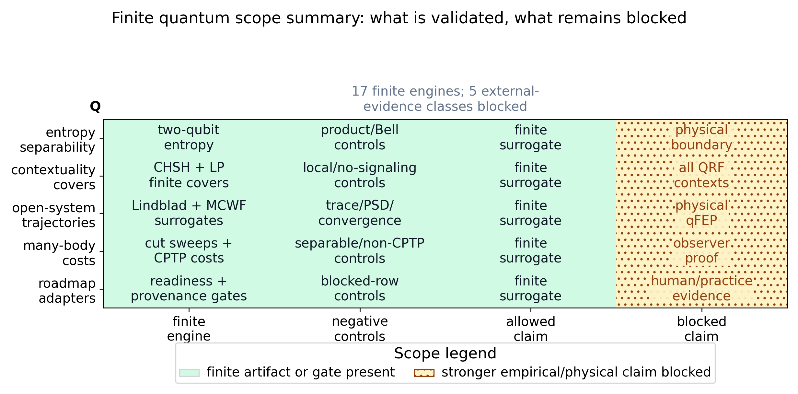
The detailed witnesses and controls are therefore reported in sec. 7.2
rather than printed as the main result sequence. This placement is
substantive rather than cosmetic: it keeps the main paper aligned with
sec. 3.2, sec. 4.1, and sec. 4.3, while preserving the
quantum artifacts as inspectable software support for
qfep_surrogate_scope.
4.3 BMR Pruning and Sensitivity Behavior
The BMR sweep records that pruning is not asserted globally. It appears when metacognitive access is high enough that the separation prior no longer pays for its complexity with additional accuracy. The decomposition panel makes this visible as a changing relation among Delta complexity, Delta accuracy, and Delta free energy, while fig. 10 exposes the sign convention across the parameter grid: the free-energy change is the reduced model’s free energy minus the full model’s, so prune means the reduced model has lower free energy and keep means the separation prior’s accuracy contribution still offsets its complexity cost.
The sensitivity grid extends the result over observation noise. The
current generated run reports 45 BMR cells and
315 sensitivity cells, expanding the finite denominator for
the same keep/prune question rather than changing the evidence class.
Across this finite surface, high-access rows prune more consistently
than low-access rows, but the analysis remains bounded to deterministic
surrogate behavior. The useful result is not a universal conclusion
about subjects or practices. It is a parameterized prediction about when
the modeled separation prior should become less attractive under the
local free-energy decomposition.
Read as the separation prior’s life-cycle, these sweeps yield concrete measured values. Across the emergence grid the factored-model advantage rises from 0.0 at zero empowerment, where empowerment is used as a bounded information-theoretic control surrogate (Klyubin et al. 2005), to 0.453 at full empowerment (fig. 7), and the weakest admissible prior (precision 0.2) crosses from keep to prune at a metacognitive-access value of approximately 0.56, linearly interpolated between sweep grid points (fig. 8), while the stronger priors prune throughout. At the dispensable end, the ongoing-revision audit measures a post-regime advantage jump of +0.21 on the non-stationary stream against -0.02 on a stationary control run with identical machinery, which attributes the gain to revision under change rather than to generic adaptive overfitting. These are single fixed-seed deterministic surrogate values, not developmental, neural, contemplative, or clinical measurements.
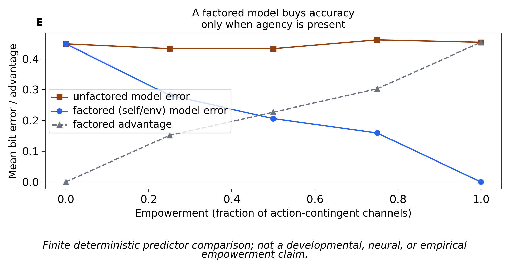
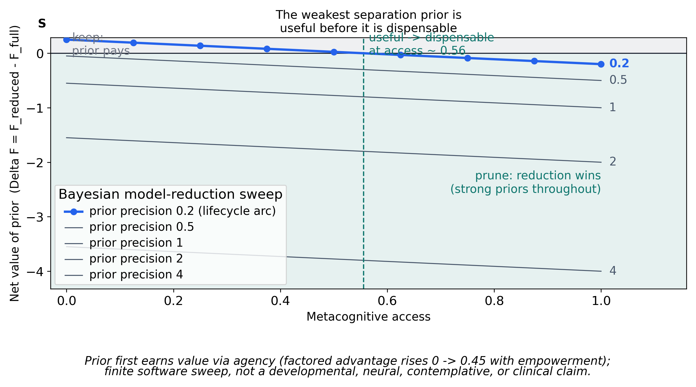
The robustness resampling audit asks the same question cell by cell after aggregating over observation-noise rows. Bootstrap intervals summarize reduced-minus-full free-energy stability and pruning-rate stability for each prior-precision/access pair. This does not make the BMR surface empirical, but it does separate brittle sign changes from cells where the finite surrogate keeps the same keep/prune direction over the sampled noise surface.
The alternative-prior audit adds a second check on the same lifecycle. It repeats the access and prior-precision grid for the baseline, a log-compressed sigma-complexity penalty, and a convex access-dependent sigma-accuracy bonus, then records measured keep/prune verdicts and the weakest-prior crossing for each family. At least one crossing shifts relative to baseline while high-access rows remain numerically bounded, so the result is traceable to explicit prior-family assumptions rather than a single hidden parametrization. This is Bayesian workflow accounting over deterministic software rows (Talts et al. 2018; Gelman et al. 2020), not an empirical power or subject-level inference.
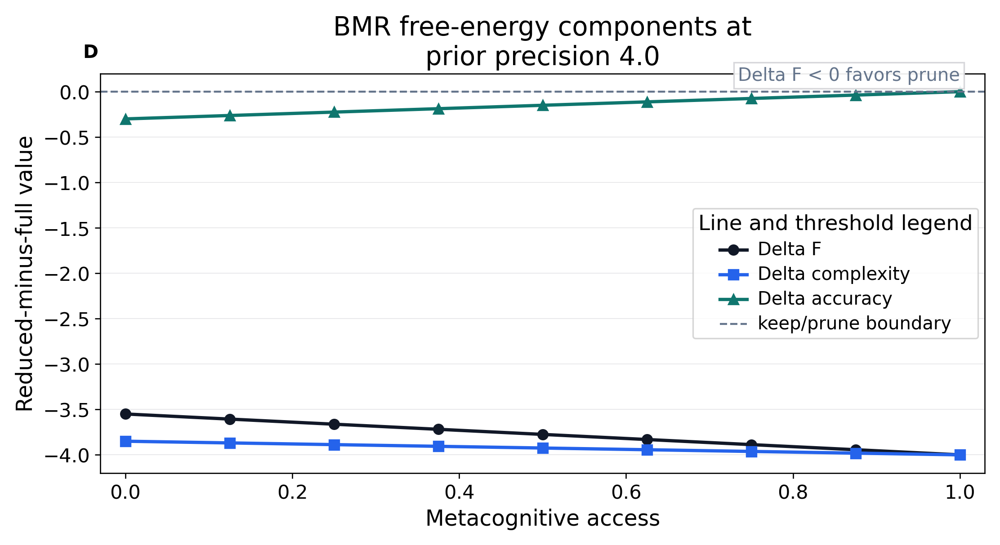
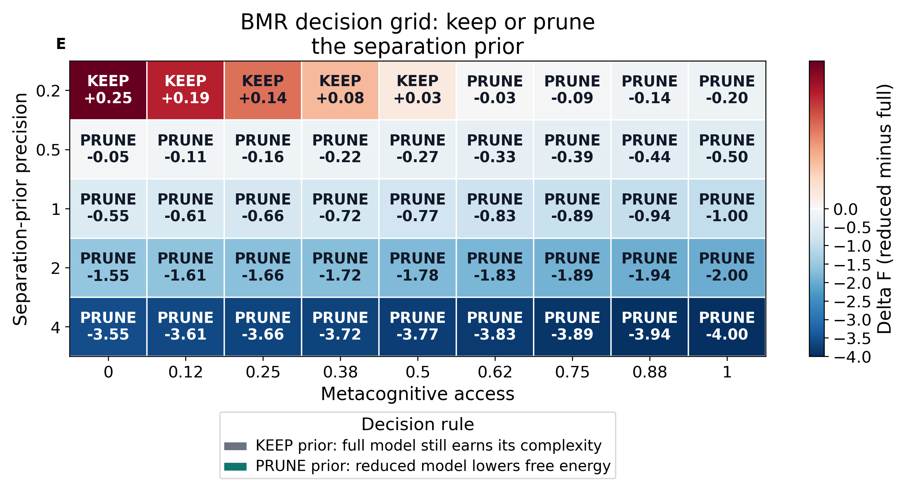
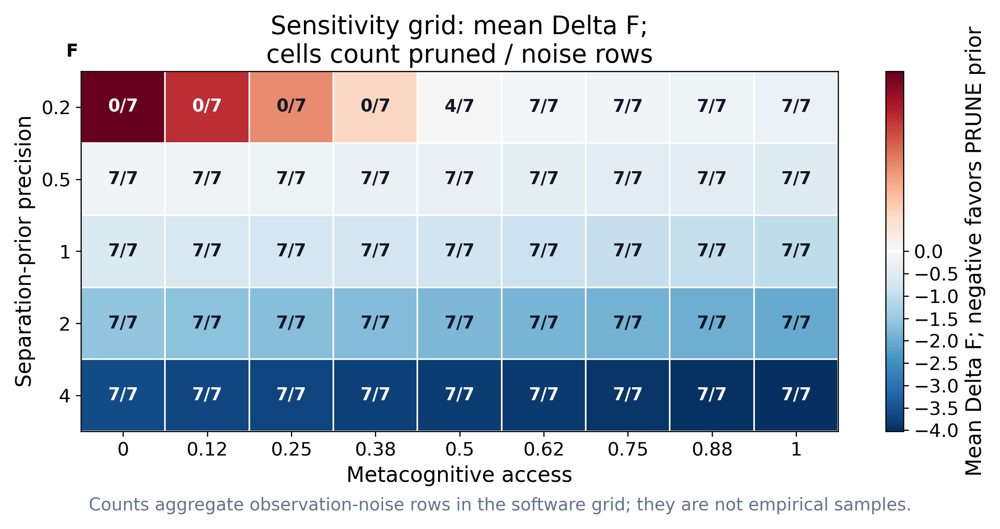
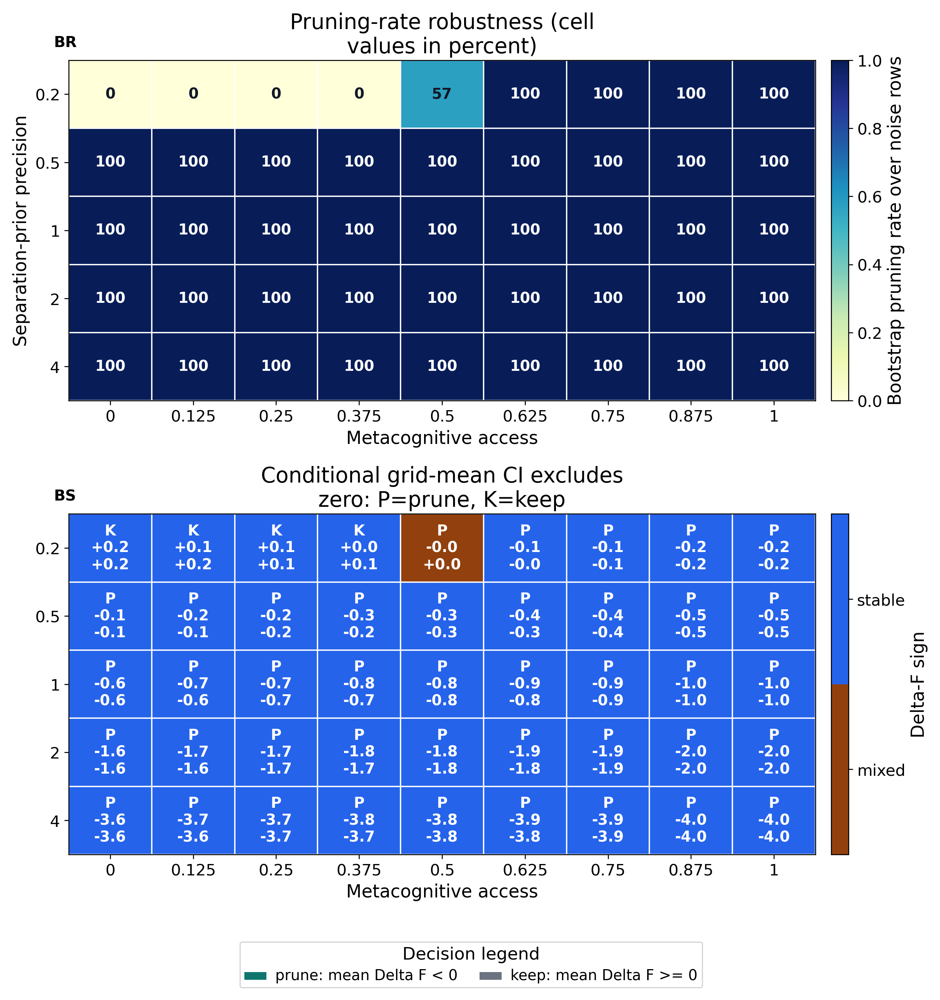
This prune-at-high-access lifecycle (fig. 10) restates the emergence result (fig. 7) as a full life-cycle, useful under restricted access and then reducible with no residual ontological commitment, and is the behavior the active-inference profiles must instantiate in sec. 3.5.
4.4 pymdp Profiles and Policy Trace
The active-inference simulation uses profile-specific A,
B, C, and D arrays for
separation-constrained, opacified, and post-dual QRF deployments. The
generative-model audit records normalized likelihood, transition,
preference, and prior arrays for each profile; the policy trace records
hidden-state posteriors, policy posteriors, expected-free-energy terms,
variational free energy, selected actions, perturbation status, and
action counts at each step; and the runtime diagnostics log rederives
expected-free-energy terms from the saved arrays, verifies weighted
expected free energy as
policy_posterior @ expected_free_energy, checks
profile/action/observation labels, records model hashes and package/JAX
diagnostics, and checks deterministic replay.
Across the three deployments the post-dual profile minimizes variational free energy at -1.34, below the opacified profile at -0.94 and the separation-constrained profile at -0.80, so it ranks highest under the finite software posterior; this ranking is over finite deployments and is not a claim about which ontology is true.
In fig. 13, free energy,
posterior mass, and selected actions are plotted side by side with short
profile labels, a full-name legend, an explicit lower-free-energy sign
annotation, and an external action legend. The plotted posterior mass is
a software ranking over finite deployments, not a claim about which
ontology is true. The posterior trajectory traces how
P(contextual_post_dual state) evolves under replayed
observations and marked perturbation steps; every step is renormalized
before it enters fig. 14. The
supplemental runtime dashboard in fig. 50 reports the
corresponding residuals and replay controls as validation checks for the
software surface, not as empirical evidence.
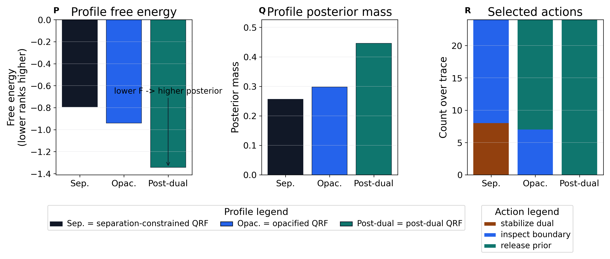
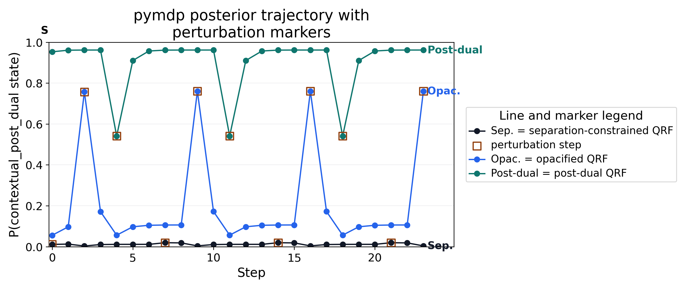
These profile comparisons (fig. 13) close the arc opened by the boundary screen (sec. 3.2), implementing each licensed sector frame as a distinct finite generative model rather than an asserted interpretation.